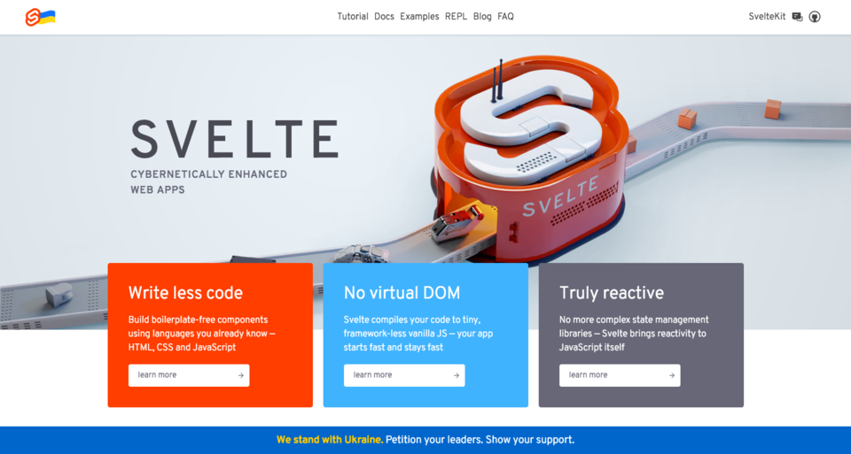

… ou SDK (bibliothèque qui simplifie les appels REST)
GraphQL
Toutes* les données deviennent disponibles en JSON via le Web!
* Enfin, celles qu’on veut qui le soient, bien
sûr
2. Moissonnage
Comment exploiter les données?
Comment les présenter?

Svelte
+ Kit un framework progressif pensé pour un Web à faible
empreinte
Un mot sur les super-frameworks du jour (NextJS, Nuxt, Astro,
…)
Paradigmes et intérêts (standards WWW, entreprises, $$$)
Communauté
JSON
JavaScript
Svelte … mais surtout du HTML
Utiliser les technologies du Web :
Throughout this documentation, you’ll see references to the standard
Web APIs that SvelteKit builds on top of. Rather than reinventing the
wheel, we use the platform, which means your existing web development
skills are applicable to SvelteKit. Conversely, time spent
learning SvelteKit will help you be a better web developer
elsewhere.

Comment réunir tout ça?